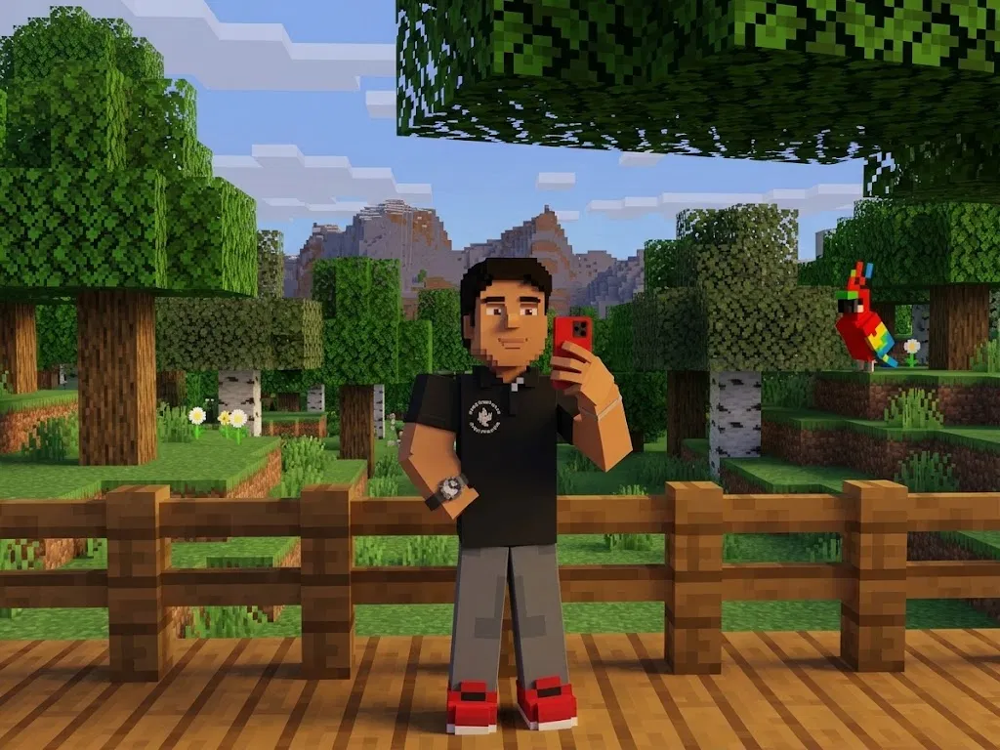

Cristian Uribe
Estrategia de datos
Se encarga de la pregunta anterior a todo: qué queremos saber y para qué. Define el enfoque del análisis, decide qué información vale la pena buscar y mantiene al equipo apuntando al mismo objetivo cuando el proyecto empieza a ramificarse.